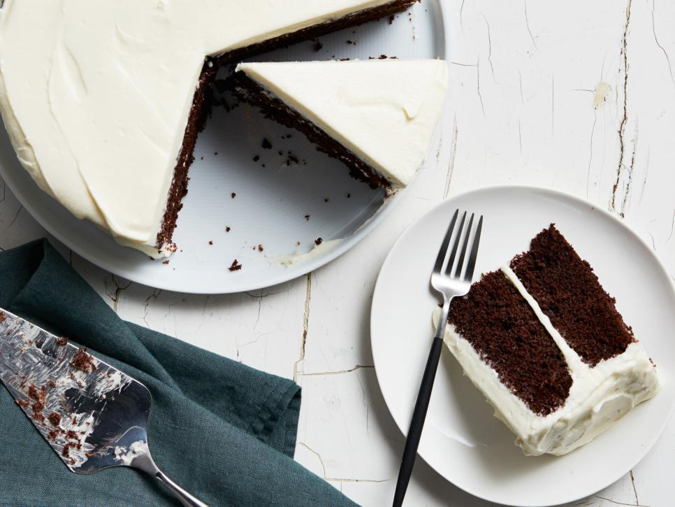

Devil's Food Cake with Cream Cheese Frosting
Ingredients
Cake
| unsalted butter |
12 tablespoons |
| fine salt |
1/2 teaspoon |
| granulated sugar |
2 cups |
| eggs |
3 |
| all-purpose flour |
2 cups |
| unsweetened cocoa |
3/4 cup |
| baking powder |
3/4 teaspoon |
| milk |
1/4 cup |
| pure vanilla extract |
2 teaspoons |
| baking soda |
1 1/2 teaspoons |
Frosting
| pure vanilla extract |
1 teaspoon |
| confectioners' sugar |
2 1/2 cups |
| unsalted butter |
1 cup |
| cream cheese |
2 packages |
| cold heavy cream |
1/4 cup |
| fine salt |
1/4 teaspoon |
Directions
- Preheat the oven to 350 degrees F. Lightly butter two 9-inch round cake pans
and line the bottoms with parchment paper.
- Whisk together the flour, baking soda, baking powder and salt in a medium bowl;
set aside. Bring the milk and 1 1/4 cups water to a boil in a small saucepan.
Remove from the heat and set aside.
- Beat the butter in a large bowl using an electric mixer on medium speed until smooth.
Add the granulated sugar, increase the speed to medium-high and beat until light and fluffy, about 4 minutes,
stopping to scrape down the sides of the bowl occasionally. Add the cocoa powder and vanilla and beat at medium speed for 1 minute.
Reduce the speed to medium-low and add the eggs, 1 at a time, beating for 1 minute after each addition.
- Reduce the mixer to low and beat in the flour mixture in four additions. Carefully pour the hot milk mixture into
the batter. Stir using a rubber spatula until smooth. Evenly divide the batter between the prepared pans and lightly tap the pans
on the counter.
- Bake until the cakes begin to pull away from sides of the pans and the centers spring back when pressed gently,
30 to 35 minutes. Cool the cakes in the pans on a wire rack for 10 minutes. Invert onto the rack and cool completely.
Peel the parchment from the bottoms.
- Beat the cream cheese and butter with an electric mixer on medium-high speed, scraping down the sides of the bowl
occasionally, until smooth, about 2 minutes. Reduce the mixer speed to low and add the confectioners' sugar, vanilla and salt.
Gradually increase the mixer speed to medium-high and beat until the frosting is fluffy and smooth, about 3 minutes.
With the mixer running on medium-high speed, slowly pour in the heavy cream until it is fully incorporated.
Continue beating until the frosting is slightly lighter in color and creamy, about 1 minute more.
- Put one cake round on a serving plate; spread about one-third of the frosting over the top,
going to the edge of the cake. Place the second cake round on top. Frost the top and sides with the remaining frosting.